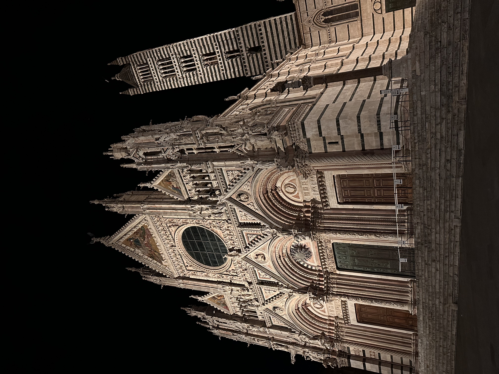
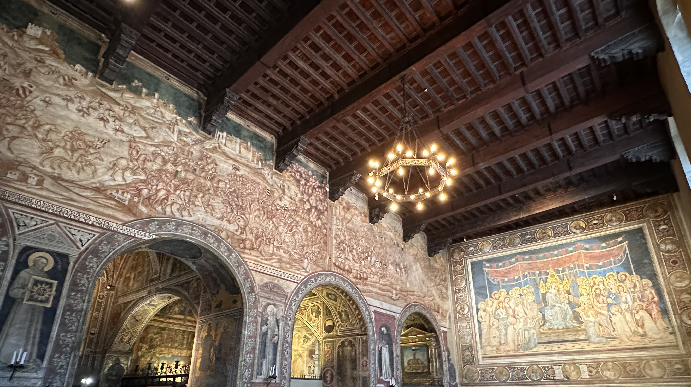
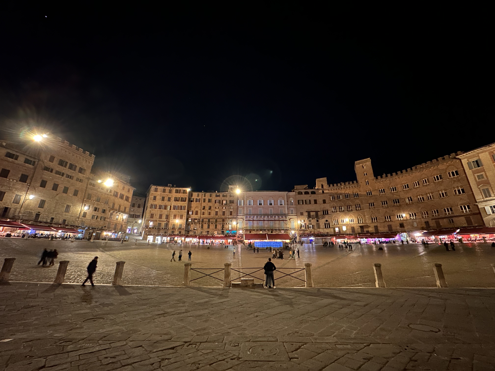

💡 錫耶納行前懶人包
🛑 錫耶納獨旅防雷與隱藏密技
🧗火車站隱藏手扶梯
錫耶納火車站在山谷，千萬別傻傻跟著導航爬山！出站後請尋找 Risalita Meccanizzata 指標，搭乘 6 段免費手扶梯，就能輕鬆直達古城邊緣。
🗺️ 錫耶納必做體驗與景點地圖

錫耶納大教堂 Duomo
為了與死敵佛羅倫斯一較高下，甚至超越聖母百花大教堂，這座教堂凝聚了錫耶納全部的榮耀與野心。從立面雕塑到內部空間，每一處皆精雕細琢；而覆蓋整座地面的石材鑲嵌畫，更以其驚人的規模與細節，被視為歐洲教會建築中幾乎無可取代的存在。
💭 我的感受：
一開始其實沒有抱太大期待，但走進Siena Cathedral後，才真正被震撼。地面鋪展的石材鑲嵌畫、位於側翼的Piccolomini Library壁畫與新月形地板、以及屋簷上無數俯視信眾的人頭雕塑，都是在歐洲其他教堂從未見過的強烈視覺體驗。
建議提早入場，避開團客人潮，並購買 Opa Si Pass（2026年全票約14歐元），可一次參觀所有包含的五個景點。特別推薦Museo dell'Opera Metropolitana del Duomo的頂樓露台，能俯瞰整個錫耶納古城全景。

錫耶納市政宮 Palazzo Pubblico
作為錫耶納共和國的政治中心，這座市政宮內部空間以精緻而巨幅的壁畫環繞四周，展現出錫耶納昔日的輝煌與榮光。
💭 我的感受：
這裡最引人注目的，莫過於為警醒執政者而創作的壁畫《善政與惡政的寓言》，以極具象徵性的畫面，呈現權力治理的深刻對比與寓意。
此外，亦可見描繪19世紀義大利統一歷程的連幅壁畫。可惜參觀當日，Torre del Mangia未開放，未能登塔俯瞰整座城市。

田野廣場 Piazza del Campo
圍繞著市政宮展開的貝殼狀廣場，是錫耶納最具代表性的地標，也被公認為義大利最美的廣場之一。
💭 我的感受： 當時已是夜晚。穿過蜿蜒狹窄的中世紀街道後，一跨出拱門，巨大的扇形廣場瞬間在眼前展開，向四方對稱延伸，並自然匯聚向遠方的市政宮，彷彿整座城市的秩序與權力，都在此被無形牽引。在錫耶納這樣一座安靜的小城裡，這種由空間結構帶來的壓迫與秩序感，顯得格外震撼。
🚆 錫耶納交通全攻略：從佛羅倫斯與羅馬出發的實測建議
📍 從佛羅倫斯出發 (Firenze)
快速直達公車 131R (最推薦)
BEST CHOICE🛫 起點佛羅倫斯主火車站 (Santa Maria Novella)
🏁 終點錫耶納舊城區 (San Domenico)
⏱️ 時間約 1 小時 15 分鐘
💶 價格約 €9.3 (點此查官網)
📍 從羅馬出發 (Roma)
FlixBus 長途巴士
🛫 起點Roma Tiburtina 站 (非主火車站)
🏁 終點錫耶納主火車站 (離舊城需走約 30 分鐘 | 或搭公車)
⏱️ 時間約 2 小時 45 分鐘
💶 價格約 €5 - €9 (視訂票時間)
📍 其他方案 (Trenitalia 火車)
義大利國鐵 Trenitalia
⚠️ 不推薦- 從佛羅倫斯：耗時較長 (約 1hr 40min)，且票價約 €10.2，CP 值極低。
- 從羅馬出發：至少需轉車一次，對於拖大行李的旅人非常不便。
🚐 懶人玩法：佛羅倫斯出發一日團
不想研究交通工具？想一天內走完 Siena 與周邊必訪景點/體驗 (e.g. 托斯卡尼酒)？參加專車接送的一日團是最省心的選擇。
🐎 錫耶納年度慶典：無鞍賽馬節 (Il Palio)
激狂的中世紀榮耀之戰
錫耶納賽馬節（Palio di Siena）不僅僅是一場賽事，更是全歐洲最瘋狂、保存最完整的中世紀傳統慶典。每年 7月2日 和 8月16日，田野廣場（Piazza del Campo）會鋪滿黃土，整座城市的 17 個堂區（Contrade）將派出代表，為了堂區的至高榮譽展開激烈的無鞍賽馬。
賽事本身僅歷時約 90 秒，但整個慶典包含了連續數天的華麗中世紀遊行、街頭晚宴與震耳欲聾的歌唱。如果你熱愛文化體驗且不怕擁擠，這絕對是義大利最具生命力的文化震撼教育。
- 廣場中央的「站立區」為免費開放，但需提早數小時進場且毫無遮蔽。
- 夏日高溫下非常考驗體力，請務必帶足飲水、做好防曬，並嚴防扒手。
- 若想在周邊看台或陽台舒適觀賽，需提前大半年向當地店家或私人高價預訂。
🛏️ 錫耶納住宿推薦：獨旅高CP值與安全清單
針對獨旅者的預算、安全感與交通便利度，我整理了以下 5 間在錫耶納（Siena）表現最穩定的住宿選擇。錫耶納是山城，建議依據自己的「行李多寡」與「行程偏好」來決定要住離火車站近，還是離老城區近：
| 🏨 住宿名稱 | 💰 價格感受 | ⭐ 評分 / 口碑 | 🛡️ 安全感 | 🚶 交通 / 近景點 | 💡 我為何推薦 | 🔗 查價與訂房 |
|---|---|---|---|---|---|---|
|
Casa di Alfredo Affittacamere
|
最便宜梯隊，約從 55 歐起。 | 評分約 8.6，評論量接近千則，屬於便宜又不差的類型。 | 市中心型住宿，獨旅通常夠方便，但更像簡單型房間。 | 離核心區不遠，屬於可步行玩景點的類型。 | 便宜與評分平衡最好，很適合願意接受小瑕疵、不想踩大雷的人。 | |
|
B&B Siena In Centro - Diffuso
|
價格起點約 99 歐，不是最低，但仍屬市中心實用價位。 | 評分約 8.6，位置評分高，優勢很明顯。 | 市中心、走路方便，對獨旅算安心。 | 離 Piazza del Campo 很近，景點可步行到達。 | 如果你把近景點放很前面，這間很強，而且整體不算貴到離譜。 | |
|
Casa di Osio
|
價格約 74 歐起，屬於很有競爭力的價位。 | 評分約 8.4，屬於穩定、實用型。 | 市中心位置，獨旅方便度不錯。 | 中心區，走路逛景點很省事。 | CP 值很高，如果你想壓預算，這間是很合理的中段選擇。 | |
|
NH Siena
|
價格通常不會太誇張，屬於中低價帶。 | Agoda 顯示評分 8.5，口碑穩定。 | 連鎖型飯店，對獨旅通常更安心。 | 位置方便，適合作為進出 Siena 的基地。 | 穩、好找、不太麻煩，適合不想把時間耗在住宿細節上的人。 | |
|
Hotel Italia Siena
|
常被列為 Siena 便宜飯店之一。 | 評價量大，屬於市場驗證充分的類型。 | 比較偏「穩定保守」而不是設計感路線。 | 靠近火車站，進出最省力，走到古城區也可接受。 | 如果你重視交通方便勝過超近景點，它很值得放進前三考慮。 |
註：歐洲住宿價格會隨旅遊旺季與匯率波動，請以訂房網當下顯示為準。
退房後不想拖行李走石板路？
錫耶納的高低起伏極大，拖著大行李箱逛街絕對會崩潰！退房後或把錫耶納當作中繼站時，強烈推薦使用 Radical Storage，將行李寄放在當地的雜貨店或咖啡館，一件只要 €5/天，解放雙手輕鬆逛古城。
🍝 錫耶納美食指南：必吃特色與獨旅愛店
🍽️ 錫耶納 3 大必吃美食與代表店
來到托斯卡尼心臟地帶，即使預算有限，這三樣最具代表性的傳統滋味也絕對值得你安排一餐來體驗：
野豬肉料理 (Cinghiale)
托斯卡尼的名物！不管是做成冷盤火腿，還是燉煮成濃郁的野豬肉醬搭配寬麵 (Pappardelle)，都是粗獷迷人的在地風味。
Pici 手工粗麵
源自錫耶納的傳統手工麵條，外觀像極了粗烏龍麵，口感Ｑ彈。最經典的吃法是搭配蒜香番茄醬 (Aglione) 或起司黑胡椒。
傳統杏仁甜點
中世紀流傳至今的 Panforte (果仁蜜餅) 與 Ricciarelli (軟杏仁餅)，口感紮實不過甜，點杯 Espresso 搭配最對味。
🎒 獨旅實戰：低預算與友善店家清單
除了特色大餐，獨旅者最在意的通常是「一個人進餐廳的尷尬感」以及「預算控制」。以下精選 5 間深受 Reddit 與獨旅部落客推崇的在地平價好店，特別標註了具備吧台或適合單人快速用餐的選擇：
| 🍴 餐廳 / 小吃 | 💰 價格水平 | 🍝 在地料理 / ⭐ 評價 | 🛡️ 獨旅友善度 | 📍 景點附近 | 💡 我為何推薦 |
|---|---|---|---|---|---|
|
🔥 親測推薦
Du' Cose da Berna
|
很低 8–12 歐主菜 |
高，最推帕尼尼：口味多又便宜。Pici 麵/肉盤超道地。獨旅部落格熱推。 | 很高：有吧台超自在 | Campo 廣場步行 5 分內 | 我親測的 CP 值王！老城中心又不貴，獨旅必備。 |
|
Permalico
|
低 預算友善首選 |
高，家常菜如 Ribollita、Pici。Reddit 熱門推薦。 | 很高：Reddit 指定 OK | 市中心老城內順路 | 論壇低價代表，特色是「快又好吃」，是用餐首選。 |
|
Bargello
|
低 平價小館 |
高，野豬/Porcini 在地菜。TripAdvisor 評價讚。 | 高：小店適合單人 | 近 Duomo 主教堂動線 | 獨旅論壇低調推，價格親民、份量足，絕不浪費。 |
|
Trombicche
|
低到中 經濟實惠 |
高，Pici Aglione/傳統湯品。自助客常用店。 | 高：吧台快餐式獨食佳 | Campo 區步行範圍 | Reddit 低預算清單，想「避開排隊快點吃到」的好選擇。 |
|
Consorzio Agrario (外帶小吃)
|
很低 3–5 歐三明治 |
高，新鮮 Focaccia/在地起司麵包。 | 很高：邊走邊吃零壓力 | 市中心雜貨美食站 | 獨旅逛景點最省時省錢的「快餐外帶」首選。 |
註：義大利餐廳通常有 Coperto (桌費)，外帶或站食通常可免去此項費用。
🇮🇹 義大利獨旅生存避雷箱
交通：營運分散與城鄉差異
義大利的大眾運輸非常「在地化」。除了主要大城市間有國鐵與私鐵銜接外，南北部與城鄉之間的交通，通常由各自獨立的地區巴士公司營運，班次邏輯與準點率差異極大。
自駕：ZTL 古城交通管制
這是自駕者的夢魘！幾乎所有義大利歷史古城（包含錫耶納）中心都設有 ZTL (交通限制區)。若未經許可誤闖，會被無處不在的監視器拍下，回國後將收到天價罰單。
票務：打票與 App 啟用機制
義大利的區域火車票與公車票「不一定是買了就能直接用」。紙本票上車前必須在月台打票機打上時間；若是使用 App 購買的電子票，上車前必須手動點擊「Check-in / 啟用」。

Bryan | Europe Solo Guide
「獨旅不是孤單，而是給自己一場完整的自由。」
熱愛穿梭在歐洲老城區的石板路上。目前已獨自走訪 41 個歐洲國家，致力於將複雜的交通、住宿與隱藏景點，轉化為有溫度的獨旅攻略。希望這篇文章能幫你省下找資料的時間，把精力留給旅途中的美好。
✉️ 聯繫我 / 合作邀約